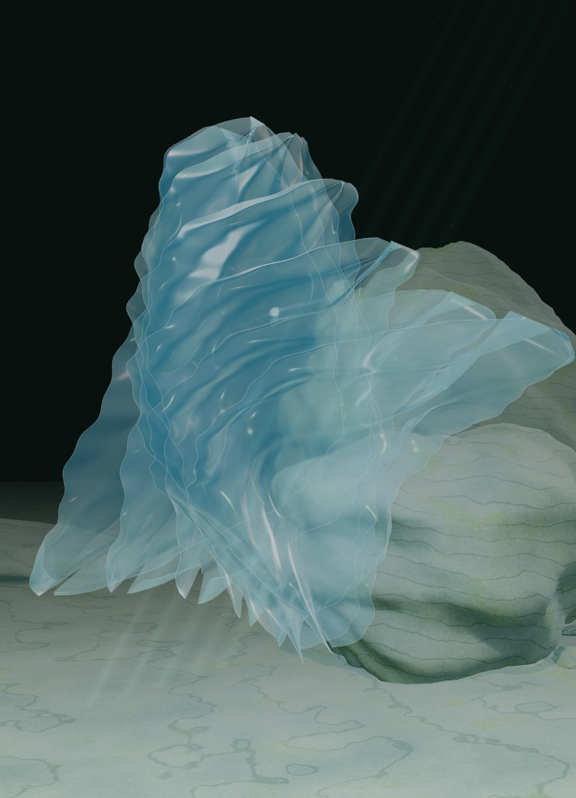
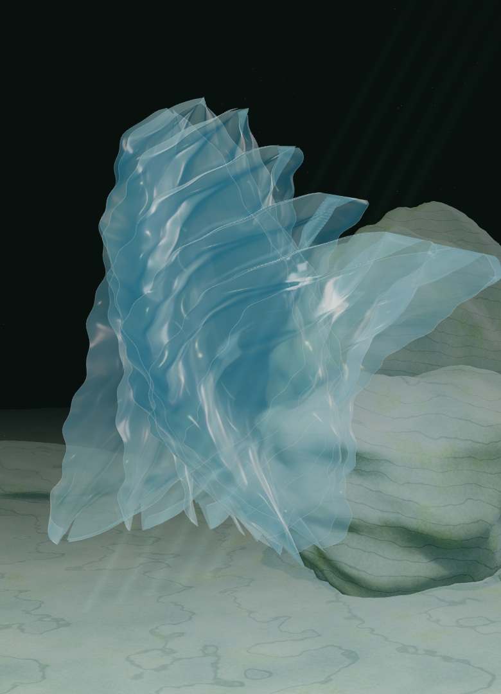
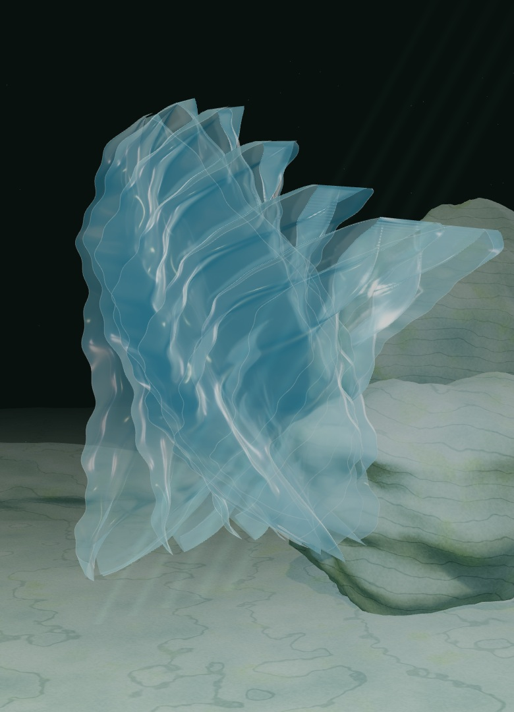
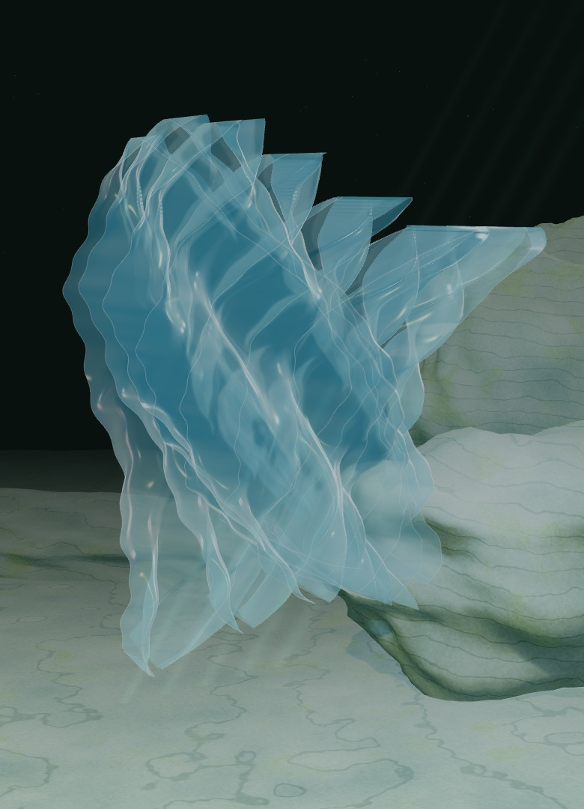

Light through
complexity.
I’m Victor. I build software that turns tangled requirements into something people can use.
Meet my practiceAn original optical study. Scroll to reveal.

First, understand.
Then, make it work.
My grounding is Dynamics 365 F&O and ERP. I work across the whole path: requirements, technical design, implementation, testing, deployment and support.
Read how I work
Clarity is part of the work.
Before writing code, I want to understand the need behind the request. What does the person need to do? Where does the current process get in the way? What needs to connect to the rest of the system?
Technical design turns that understanding into an approach that can be implemented and maintained. For me, implementation belongs with testing, deployment and support—not apart from them.
ERP work also means working with people across teams. I care about making the technical choices understandable, coordinating the moving parts and keeping the actual user’s task in view.
Continue to my curiosities
There’s always
another layer.
Outside the day job, I’m drawn to Raspberry Pi, homelab and server tinkering, and the possibilities of AI-assisted work and web apps.
Read what draws me in
Curiosity, with something to do.
A small computer or a home server is an invitation to get closer to how a system works. I’m interested in the connections between software, the machine it runs on and the practical things it can help with.
I’m also curious about AI-assisted processes and web apps: where they can make useful work easier, and where human understanding still has to lead. These are interests and explorations, not a catalogue of claimed client results.
This site’s light and mineral forms are illustrative artwork. They express the feeling of looking through complexity; they are not a simulation or evidence of a deployed system.
Read about working together
Let’s find
a clear next step.
I’m employed full-time. I’m open to contained freelance work that fits remote, evening or asynchronous collaboration, and conversations about senior or technical-lead opportunities.
Connect on LinkedInLinkedIn opens in a new tab. No form, no invented inbox.
Read availability & scope
A useful conversation starts with scope.
For freelance work, tell me what you need to accomplish, how the work fits your current setup and what constraints matter. Individuals and small businesses with a contained need are the intended fit.
My full-time work comes first, so timing, communication and a realistic scope matter. Remote, evening and asynchronous work are the boundaries—not a promise of immediate or unlimited availability.
For career conversations, I’m interested in senior and technical-lead work where end-to-end software development, ERP understanding and cross-team coordination are useful.
Start a conversation on LinkedIn